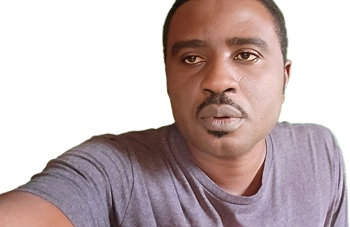

Peter Ella Bisong | WDD 130

This is the personal website of Peter Ella Bisong, a student in the WDD 130 course. Here you can find information about my projects, skills, and contact details.

This is the personal website of Peter Ella Bisong, a student in the WDD 130 course. Here you can find information about my projects, skills, and contact details.